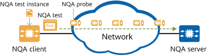

NQA Fundamentals
NQA obtains network quality information by sending a series of test packets and receiving response packets, a process known as an NQA test. There are multiple types of NQA tests, such as Internet Control Message Protocol (ICMP) test and trace test, in each of which NQA sends different types of simulated data packets or service packets to network nodes to collect network quality data in real time. Data includes the delay, packet loss rate, jitter, reachability, and service response time, helping users measure network performance and diagnose network faults while assisting in network design and optimization.
NQA Test Fundamentals
In an NQA test, the source is called an NQA client, and the destination is called an NQA server. To initiate an NQA test on an NQA client, you need to create a test instance on the NQA client, specify the test type and parameters, and configure when the test instance starts, the number of tests for the test instance, and the interval between the tests. Each NQA test instance is uniquely identified by an instance name and administrator name. Be aware that in most tests, you only need to configure an NQA client; whereas in TCP and UDP jitter tests, you also need to configure an NQA server for responding to NQA test packets.
A configured NQA test instance is added to the test instance queue on the NQA client for scheduling, and is initiated based on the specified start time, interval, and number of tests. An NQA test includes several probes, the number of which is configurable.
After an NQA test instance starts, the NQA client constructs packets that comply with the specified protocol based on the configured test type and sends them to the NQA server. The NQA server responds to test requests by listening to the received request packets.
The NQA client obtains network quality or performance data from the response packets.

The following describes how the delay is obtained in an NQA test process:
- The NQA client adds the timestamp t1 (current local system time) to a test packet and sends the packet to the NQA server.
- The NQA server receives the request packet and sends a response packet to the NQA client.
- The NQA client receives the response packet and adds the timestamp t2 (current local system time) to the response packet.
- The NQA client obtains the round-trip time (RTT) of the packets by calculating the difference between t1 and t2.

In a jitter test, both the NQA client and the NQA server add timestamps to the packets to be sent and to the received packets based on the local system time. The NQA client can then calculate the jitter based on the RTT difference.
NQA Characteristics
Obtaining rich network quality and performance indicators
Table 1 lists the network quality and performance indicators that can be obtained in NQA tests. You can learn about the network operating status based on these indicators.
Type |
Indicator |
Description |
|---|---|---|
Connectivity |
End-to-end connectivity |
Reachability between the source and destination |
Path information |
End-to-end path information |
IP address, reachability, and delay of each hop on the path from the source to the destination, and maximum transmission unit (MTU) of the path |
Link performance |
Delay (one-way and round-trip delay) |
Delay of communication between the source and destination |
Jitter |
Change in delay between the source and destination |
|
Packet loss rate |
Rate of the lost packets to the total packets sent from the source to the destination |
|
Network service response time |
DNS response time |
Time for a DNS server to resolve a domain name into an IP address |
Supporting various test types
NQA supports multiple types of tests, which can be used to test network quality or performance in different scenarios.
Test Type |
Description |
Example |
|---|---|---|
Ping test |
Checks network connectivity. A ping test is quick, but can collect only a few performance indicators. It can be used to reflect network connectivity in real time. |
ICMP and LSP ping tests |
Trace test |
Obtains path information. A trace test obtains addresses of all reachable nodes on the path to the destination, facilitating fault locating. |
Trace and LSP trace tests |
Jitter test |
Measures network performance. A jitter test is time-consuming, but can collect abundant performance indicators, such as the delay, jitter, packet loss rate, and packet sequence number verification result, based on which network performance bottlenecks can be analyzed. |
ICMP jitter and UDP jitter tests |
Network service performance test |
Checks the performance of each service on a network. |
TCP and DNS tests |
Flexible scheduling
NQA provides a flexible scheduling mechanism to reduce its interaction with the NMS (reducing the stress on the NMS) and helps improve efficiency of bandwidth usage on the network. You can set the start time, end time, and execution period for a test instance. The NQA scheduling mechanism will automatically adjust the execution time of a test instance based on the device workload to prevent the test instance from affecting services running on the device.
Type |
Mode |
Description |
|---|---|---|
Start mode |
Immediate start |
An NQA test instance starts immediately. |
Start at a specified time |
An NQA test instance starts at a specified time. |
|
Postponed start |
An NQA test instance starts after a specified period. |
|
Start daily |
An NQA test instance starts at scheduled time every day. |
|
End mode |
End at a specified time |
An NQA test instance ends at a specified time. |
Postponed ending |
An NQA test instance ends after a specified period. |
|
End after a specified period starting from test startup |
An NQA test instance ends after a specified period starting from its startup. |
Common NQA Parameters
The following parameters are commonly used for NQA configuration:
- frequency: specifies the interval at which an NQA test instance is automatically executed.
- interval: specifies the interval at which NQA test packets are sent.
- jitter-packetnum: specifies the number of packets sent in each test.
- probe-count: specifies the number of test probes for an NQA test instance.
- timeout: specifies the timeout interval of an NQA test instance.
Figure 2 shows the relationship between these parameters for better understanding.